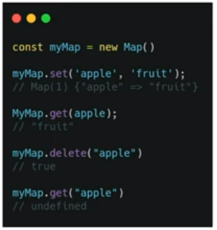
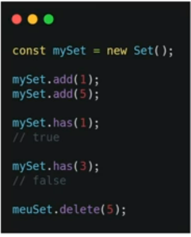

"Coleção de arrays no formato [chave, valor]."
A diferença entre o objeto e o map é que nos objetos as chaves só podem ser textos, já no map pode ser qualquer valor. Maps possuem a propriedade lenght. Nós não precisamos usar o nome da chave para manipular um map, ao contrário do objeto.
O set é como se fosse um array que só pode ter valores únicos.
O set possui a propriedade size diferente de um array que possui a propriedade lenght.